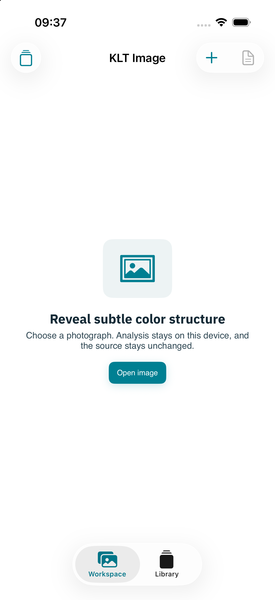

Current Debug app launched on the local iPhone 17 Pro simulator, iOS 26.4, on 2 October 2026. This empty-workspace screenshot verifies launch only. It does not establish 1000% zoom, gesture behavior, or image fidelity.

Controlled source and RGB/Lab reference exports